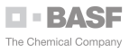
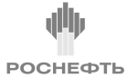

О группе
”
Добро пожаловать в группу CREON
Фарес Кильзие
Основатель и глава группы CREON
История группы CREON неразрывно связана со становлением отечественного топливно-энергетического комплекса: за 20 лет нефтегазохимическая промышленность России обрела новый̆ облик, и мы по праву гордимся своим участием и вкладом в формирование инновационного вектора развития в добывающих и перерабатывающих отраслях российской̆ экономики.
В нефтегазохимическом бизнес-сообществе группа CREON – общепризнанный лидер в сфере консультационных, инвестиционных услуг и управлении проектами. Мы помогаем нашим партнерам увеличивать эффективность бизнеса, используя высокие компетенции сотрудников и уникальные знания, накопленные за годы работы в российской нефтегазохимии и энергетике.
Сейчас мы вышли далеко за пределы России и стран СНГ, инвестируя вместе с партнерами в проекты по всему миру и создавая совместные структуры для оказания услуг EP+F на крупных промышленных проектах.
Наша деятельность на международной арене осуществляется через люксембургский̆ фонд прямых инвестиций CREON Energy Fund и его управляющую компанию CREON Capital. Всё это выделяет нашу группу среди множества других консультационных компаний.
Своей главной миссией мы считаем содействие динамичному развитию глобального нефтегазохимического комплекса и помощь нашим партнерам в достижении успеха. Сегодня мы с вами вместе формируем будущее нефтегазоперерабатывающей̆ отрасли.
Правление
Партнеры
С момента основания в 2002 г. группа CREON пользуется доверием крупнейших международных компаний нефтегазохимического сектора. Мы предоставляем клиентам аналитику по рынкам, выполняем заказы по ТЭО, проводим экспертизу и анализ проектов, организуем мероприятия и обсуждаем инвестиционные возможности.
Начиная с 2018 г., через структуры Фонда CREON Energy Fund учреждены совместные предприятия с надежными технологическими партнёрами. Нашей общей задачей является реализация значимых проектов в нефтегазохимии и совместное управление рисками инвестиций в развивающиеся рынки. Команда экспертов CREON привлекается к работе в тех регионах, где планируется и осуществляется проект.
Для группы CREON чрезвычайно важно поддержать стремление нефтегазовых компаний к внедрению экологически безопасных способов производства. Совместно с WWF России мы с 2013 г. рассчитываем и публикуем Рейтинг экологической открытости нефтегазовых компаний. Первоначально предметом изучения была деятельность сырьевых компаний в РФ, затем опыт был перенесен на показатели в Республике Казахстан, а в настоящее время идет подготовка к публикации мирового рейтинга. Наши усилия подкрепляет то, что с момента опубликования результатов первого исследования нефтегазовые компании продемонстрировали готовность улучшать свои экологические показатели и степень открытости информации.
Клиенты
- 
- 